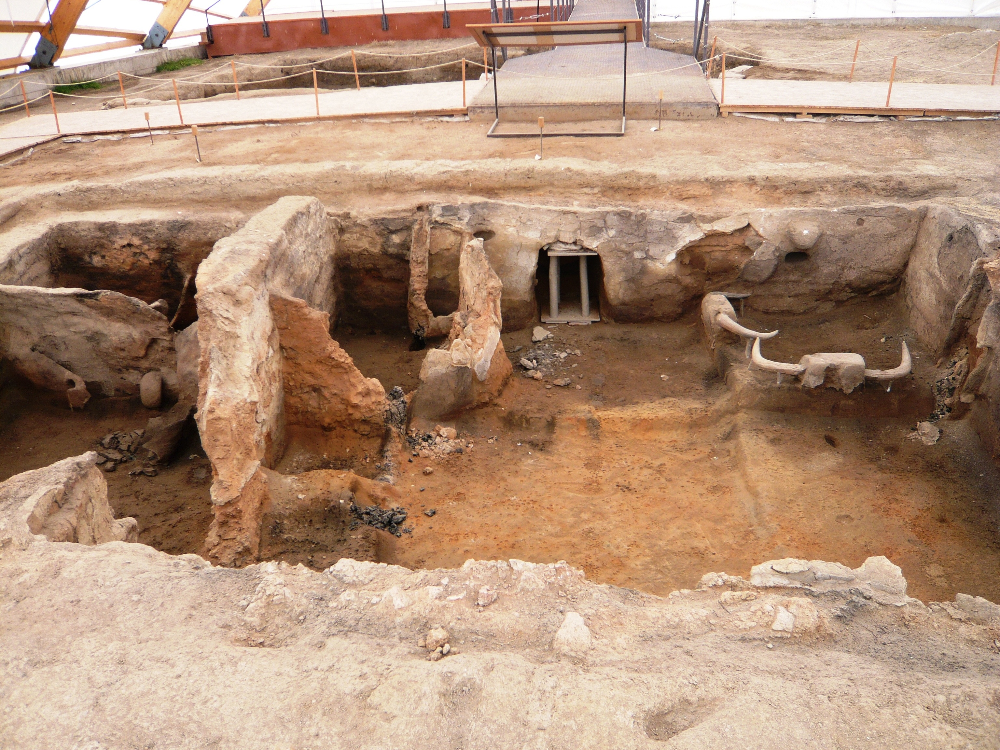
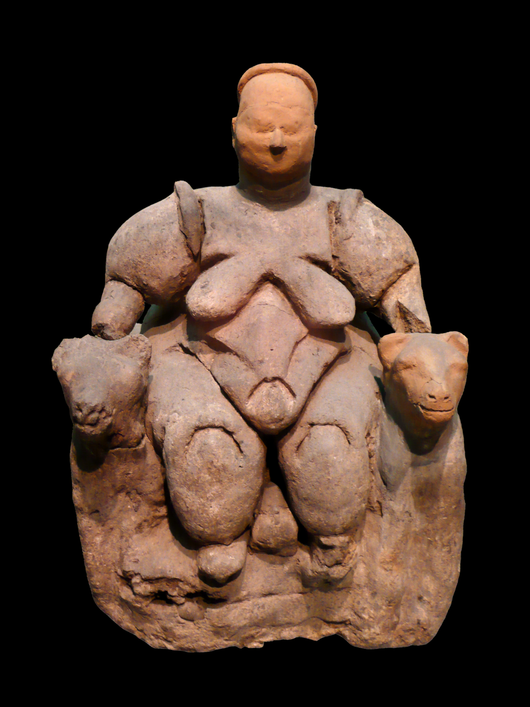

Cuando el ser humano dejó de perseguir la comida y empezó a cultivarla, cambió el mundo entero —y con él, sus dioses—. La religión de los cazadores no servía para los campesinos.
Hasta aquí hemos seguido a cazadores-recolectores: gente que se movía con las estaciones, que enterraba, tallaba y pintaba. Pero hace unos 12.000 años, en el Cercano Oriente, ocurrió la transformación más profunda de la historia humana: la agricultura. Y con ella, una nueva forma de imaginar lo sagrado.
Sembrar y cosechar, domesticar animales, quedarse en un lugar: la llamada revolución neolítica transformó cada aspecto de la vida. Y transformó también las preocupaciones religiosas. Un cazador depende de encontrar la presa; un campesino depende de que la lluvia llegue, la semilla germine y la cosecha vuelva cada año. Su vida entera se juega en el ciclo de la tierra: la fertilidad, las estaciones, la muerte del grano en invierno y su resurrección en primavera.
No es casualidad que muchas de las religiones posteriores giren en torno a dioses que mueren y resucitan con las estaciones, a diosas de la tierra y la fecundidad, a ritos para asegurar la lluvia y la cosecha. Esa gramática religiosa —la del ciclo agrario— nace aquí, con los primeros campos.
Al inventar la agricultura, el ser humano pasó a depender de la tierra y las estaciones. Sus dioses cambiaron en consecuencia: aparecieron divinidades de la fertilidad, del grano, de los ciclos que mueren y renacen cada año.
El mejor lugar para asomarse a esa religión nueva es Çatalhöyük, en la actual Turquía: uno de los mayores asentamientos neolíticos conocidos, habitado hace unos 9.000 años por quizá varios miles de personas. Era tan densa que no tenía calles: las casas se apretaban unas contra otras y se entraba por el techo, por una escalera.

Lo asombroso de Çatalhöyük es que lo sagrado no estaba en un templo aparte: estaba dentro de las casas. Sus habitantes decoraban las paredes con pinturas, cráneos de toro empotrados (los llamados bucráneos), relieves de leopardos. Y enterraban a sus muertos bajo el suelo de sus propios hogares, a veces recuperando los cráneos para conservarlos. Los vivos dormían literalmente sobre sus ancestros.
En Çatalhöyük apareció una figura que se hizo famosísima: una mujer sentada entre dos felinos, con las manos sobre sus cabezas, en el acto aparente de dar a luz. Su primer excavador, James Mellaart, la interpretó en los años sesenta como la prueba de un culto a la Diosa Madre, y Çatalhöyük se convirtió en el símbolo de una supuesta religión matriarcal primigenia.

La imagen es poderosa, pero aquí reaparece la cautela de la entrega IV. Las excavaciones recientes, dirigidas durante décadas por Ian Hodder, han matizado mucho aquella lectura. Se encontraron también figuras masculinas y animales; muchas figurillas no parecen diosas, sino objetos cotidianos; y no hay señales claras de que las mujeres tuvieran un estatus dominante. Hodder concluye que la idea de un culto único a la Diosa Madre dice más de los años sesenta que del Neolítico.
Descartar la Diosa Madre única no significa que no pasara nada religioso en Çatalhöyük —todo lo contrario—. Lo que vemos es una religiosidad doméstica y ancestral: el hogar como centro sagrado, los muertos integrados en la casa, los animales poderosos (toros, leopardos) presentes en las paredes, un mundo simbólico denso y cotidiano. La religión ya no está solo en cuevas remotas o en grandes santuarios: se ha metido en casa, entre los vivos y sus antepasados.
Y late aquí el gran cambio de fondo: con la agricultura, la continuidad se vuelve central. Continuidad de la cosecha, del linaje, de la casa, de los muertos que siguen bajo el suelo. La religión neolítica es, en buena medida, una religión de la permanencia: mantener el ciclo, honrar a los ancestros, asegurar que la vida vuelva. De esa preocupación saldrán, con el tiempo, los grandes dioses de las primeras civilizaciones.
Lectura: es consenso que la agricultura transformó la vida y la religión, y que en Çatalhöyük lo sagrado era doméstico y ancestral. La lectura de la "Diosa Madre" única está hoy desacreditada como interpretación dominante, aunque el debate sobre las figuras continúa.
La cronología de Çatalhöyük (~7100–5700 a.C., es decir, unos 9.000 años) procede de las excavaciones de James Mellaart (a partir de 1961) y del proyecto dirigido por Ian Hodder (1993–2018). La reinterpretación crítica del "culto a la diosa" está expuesta en las obras de Hodder y de la arqueóloga Lynn Meskell, que estudió el conjunto de figurillas.
Los enterramientos bajo los suelos domésticos y el tratamiento de cráneos están documentados en los informes del Çatalhöyük Research Project. La conexión general entre agricultura y religiones del ciclo agrario es un marco ampliamente aceptado, aunque su aplicación a casos concretos se discute.
Se mantiene la distinción entre el hecho (religiosidad doméstica, culto a los ancestros, iconografía animal) y la interpretación concreta (el significado de las figuras femeninas), donde el consenso del siglo XX ha sido revisado a la baja.